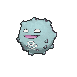
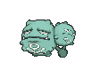

x4
x4 x4
x4 x4
x4 x2
x2 x2
x2

 x4
x4 x3
x3![Boss's Orders [Ghetsis]](./assets/654453_bosss-orders-ghetsis.jpg) x2
x2 x2
x2
 x4
x4 x4
x4 x3
x3 x2
x2 x2
x2
 x2
x2 x2
x2 x8
x8 x2
x2 Smog Signals
Smog Signals 

Game night hybrid, build 2 · every Pokémon is a Koffing or a Weezing, and none of them are ex
← back to all decksOne attack scales off your own board, and every card in the deck is a legal target for it.
Team Rocket's Weezing does 40 damage for each Pokémon in play with "Koffing" or "Weezing" in its name, counting both sides of the table. Eighteen of the eighteen Pokémon in this deck qualify, including itself. A full board is 240 damage for two Energy.
Three cards turn that from a cute number into an engine.
Galarian Weezing makes it cost one card. Energy Factory means every basic Darkness Energy attached to a Pokémon with "Weezing" in its name provides two Darkness. One Energy pays for the whole attack, and it pays for plain Weezing's 170 too.
Team Rocket's Koffing rebuilds the board when it dies. Smog Signals fires when it is damaged in the Active Spot, even on the hit that knocks it out, and searches two more Koffing onto your Bench. Killing your Active raises your damage count.
Gwynn turns spare Koffing into cards. Discard up to two Pokémon without a Rule Box and draw three for each. Every Pokémon here qualifies, and Night Stretcher brings back whatever you needed.
The strategic point is simpler than the combo. Fox needs six knockouts to win this game no matter what he brings, because you never give up more than one Prize. If he plays ex style, he needs six kills while you need two or three. If he plays single-prize, you are even on trade and ahead on damage.
x4x4x4x2x2x4x3x2x2x4x4x3x2x2x2x2x8x2Pokémon (18)
| Qty | Card | Set | Number | Reg |
|---|---|---|---|---|
| 4 | Team Rocket's Koffing | Destined Rivals | 125 | I |
| 4 | Koffing | Journey Together | 091 | I |
| 4 | Team Rocket's Weezing | Destined Rivals | 126 | I |
| 2 | Weezing | Journey Together | 092 | I |
| 2 | Galarian Weezing | Chilling Reign | 096 | E |
| 1 | Galarian Weezing | Shining Fates | 042 | D |
| 1 | Weezing | Scarlet & Violet 151 | 110 | G |
Trainers (32)
| Qty | Card | Type | Set | Number | Reg |
|---|---|---|---|---|---|
| 4 | Gwynn | Supporter | Pitch Black | 078 | J |
| 3 | Lillie's Determination | Supporter | Mega Evolution | 119 | I |
| 2 | Boss's Orders | Supporter | Mega Evolution | 114 | I |
| 2 | Team Rocket's Proton | Supporter | Destined Rivals | 177 | I |
| 1 | Team Rocket's Petrel | Supporter | Destined Rivals | 176 | I |
| 4 | Buddy-Buddy Poffin | Item | Temporal Forces | 144 | H |
| 4 | Evolution Incense | Item | Sword & Shield | 163 | D |
| 3 | Nest Ball | Item | Paldean Fates | 084 | G |
| 2 | Night Stretcher | Item | Shrouded Fable | 061 | H |
| 2 | Dark Bell | Item | Pitch Black | 075 | J |
| 1 | Prime Catcher | Item | Temporal Forces | 157 | H |
| 2 | Punk Helmet | Tool | Phantasmal Flames | 092 | I |
| 2 | Risky Ruins | Stadium | Mega Evolution | 127 | I |
Energy (10)
| Qty | Card | Set | Number | Reg |
|---|---|---|---|---|
| 8 | Basic Darkness Energy | Mega Evolution Energies | 007 | - |
| 2 | Team Rocket's Energy | Destined Rivals | 182 | I |
18 + 32 + 10 = 60. ✓
Basics: 8 (4 Team Rocket's Koffing, 4 Koffing). Both sit under 70 HP, so Buddy-Buddy Poffin fetches either one, two at a time. All eight are Darkness, which matters for the Stadium.
Main attacker. 4 Team Rocket's Weezing. The 40x. It evolves only from Team Rocket's Koffing, so the Basic count is split for it.
The Basics. 4 Team Rocket's Koffing and 4 Koffing. The Team Rocket ones feed the main attacker and carry Smog Signals; the plain ones feed everything else. Eight Basics is a slightly high mulligan rate for the format, and the fix is not more Basics, it is Poffin.
Energy engine. 2 Galarian Weezing from Chilling Reign. Energy Factory halves every attack cost in the deck and works from the Bench.
Ability lock. 1 Galarian Weezing from Shining Fates. Neutralizing Gas switches off every Ability your opponent has while it is Active, and it says "your opponent's," so Energy Factory keeps running.
Second attacker. 2 Weezing from Journey Together. Pervasive Gas confuses, then Crazy Blast hits 170 for one Energy under Energy Factory. Use it when the board is too thin for the 40x to be worth it.
Retaliation. 1 Weezing from 151. Let's Have a Blast is a coin flip to knock out whatever killed it, and Spinning Fumes puts 10 on their whole Bench. A one-of on purpose.
Draw. 4 Gwynn is the engine, because a hand full of spare Koffing converts to six cards. 3 Lillie's Determination is the reset.
Search. 4 Buddy-Buddy Poffin and 3 Nest Ball for Basics, 4 Evolution Incense for any Weezing. No Ultra Ball at all, which means no discard tax on a deck that wants its Pokémon in play rather than in the bin.
Gust. 2 Boss's Orders and the Prime Catcher. The 40x does fixed damage regardless of what is Active, so dragging up a 60 HP support Pokémon is a free Prize.
Setup. 2 Team Rocket's Proton, the only Supporter here you may play on your first turn going first, fetching three Team Rocket's Koffing. 1 Team Rocket's Petrel finds any Trainer, which in practice means the Prime Catcher or a Stadium.
Recovery. 2 Night Stretcher, which retrieves both the Pokémon Gwynn discarded and basic Darkness Energy.
Disruption. 2 Dark Bell confuses both Active non-Darkness Pokémon. Every Pokémon in this deck is Darkness, so it only ever hits theirs.
Tool. 2 Punk Helmet. 4 damage counters back at anything that attacks your Active Darkness Pokémon, and it still fires on the knockout.
Stadium. 2 Risky Ruins. All eight of your Basics are Darkness and therefore exempt, so this taxes their Bench and never yours.


 Darkness
Darkness Fighting ×2
Fighting ×2 2
2 legal (Reg I)Explode Together Now (40x) - This attack does 40 damage for each Pokémon in play that has "Koffing" or "Weezing" in its name (both yours and your opponent's).
legal (Reg I)Explode Together Now (40x) - This attack does 40 damage for each Pokémon in play that has "Koffing" or "Weezing" in its name (both yours and your opponent's).130 HP, Stage 1, evolves from Team Rocket's Koffing only.
for 40x. 40 damage for each Pokémon in play with "Koffing" or "Weezing" in its name, both yours and your opponent's. It counts itself.Two things follow from the wording. Bench bodies count, so filling your Bench is the same action as raising your damage. And your opponent's count too, which never comes up against Fox but is worth knowing.

 DarknessFighting ×22
DarknessFighting ×22 rotated out (Reg E)Suffocating Gas (50)
rotated out (Reg E)Suffocating Gas (50)Energy Factory makes each basic Darkness Energy attached to your Pokémon that have "Weezing" in their name provide two Darkness. You cannot apply more than one at a time, so the second copy is insurance, not a doubling.
Read the name clause carefully. It boosts Team Rocket's Weezing, plain Weezing, and Galarian Weezing itself. It does nothing for a Koffing.
 DarknessFighting ×23rotated out (Reg D)Severe Poison - Your opponent's Active Pokémon is now Poisoned. Put 4 damage counters instead of 1 on that Pokémon during Pokémon Checkup.
DarknessFighting ×23rotated out (Reg D)Severe Poison - Your opponent's Active Pokémon is now Poisoned. Put 4 damage counters instead of 1 on that Pokémon during Pokémon Checkup.Neutralizing Gas turns off every Ability your opponent has in play, for as long as this is your Active Pokémon. Your own Abilities are untouched.
poisons for 4 damage counters per Pokémon Checkup instead of 1. That is 40 a turn from a one-Energy attack.Retreat is 3, so committing to this is a decision, not a pivot. Bring it up when his deck is doing something you need to stop, and accept the turn you spend not attacking.
 DarknessFighting ×21legal (Reg I)Leaking Gas (30)
DarknessFighting ×21legal (Reg I)Leaking Gas (30)Smog Signals fires when this is Active and takes damage from an attack, explicitly including the attack that knocks it out. Search your deck for up to 2 Pokémon with "Koffing" in their name and put them onto your Bench.
This is the card that makes the deck resilient. Fox knocks out your Active for one Prize, and you replace it with two bodies that both add 40 to your next attack.
 DarknessFighting ×22legal (Reg I)Pervasive Gas (30) - Your opponent’s Active Pokémon is now Confused.Crazy Blast (50+) - If this Pokémon used Pervasive Gas during your last turn, this attack does 120 more damage. for 30, and confuses. for 50, or 170 if this Pokémon used Pervasive Gas on your last turn.
DarknessFighting ×22legal (Reg I)Pervasive Gas (30) - Your opponent’s Active Pokémon is now Confused.Crazy Blast (50+) - If this Pokémon used Pervasive Gas during your last turn, this attack does 120 more damage. for 30, and confuses. for 50, or 170 if this Pokémon used Pervasive Gas on your last turn.Under Energy Factory both attacks cost one card. The two turn sequence is worth it when your board is small; once you have five bodies out, the 40x beats it.
 DarknessFighting ×22rotated out (Reg G)Spinning Fumes (50) - This attack also does 10 damage to each of your opponent's Benched Pokémon. (Don't apply Weakness and Resistance for Benched Pokémon.) for 50, plus 10 to each of their Benched Pokémon.
DarknessFighting ×22rotated out (Reg G)Spinning Fumes (50) - This attack also does 10 damage to each of your opponent's Benched Pokémon. (Don't apply Weakness and Resistance for Benched Pokémon.) for 50, plus 10 to each of their Benched Pokémon. legal (Reg J)
legal (Reg J)Discard up to 2 Pokémon without a Rule Box from your hand and draw 3 for each. This deck has no Rule Boxes at all, so this is always a live draw 6 as long as you are holding two spare Pokémon, which you usually are.
legal (Reg J)Both Active non-Darkness Pokémon become Confused. Yours never is one, so this is a one-sided Item.

 ACE SPEC Rarelegal (Reg H)
ACE SPEC Rarelegal (Reg H)Gust one of their Benched Pokémon up, then switch your own Active for free. The free switch matters more here than it looks, because Team Rocket's Weezing retreats for 2 and Galarian Weezing retreats for 3.
Explode Together Now is entirely a function of how many bodies you have out.
You have six slots, one Active and five Bench, and every Pokémon in this deck counts. Six is reachable, not theoretical.
| Source | Cost | Damage |
|---|---|---|
| Team Rocket's Weezing, Explode Together Now, full board | one basic Darkness under Energy Factory | 240 |
| Weezing, Crazy Blast after Pervasive Gas | one basic Darkness under Energy Factory | 170 |
| Galarian Weezing, Severe Poison | | 40 per Checkup |
| Weezing, Spinning Fumes | | 50, plus 10 to each Benched |
| Punk Helmet | free | 40 back at the attacker |
| Risky Ruins | free | 20 per non-Darkness Basic they Bench |
| Target | HP | The line |
|---|---|---|
| Mega Zygarde ex | 310 | 200, then 170 after Gaia Wave reduction. Two turns. |
| Flareon ex | 270 | 240 at a full board, plus a Punk Helmet tick or one Risky Ruins trigger. |
| Team Rocket's Mewtwo ex | 280 | 240 plus 40 from Punk Helmet. |
| Team Rocket's Crobat ex | 310 | 200 twice, and Smog Signals refills between them. |
| Anything under 170 | - | Crazy Blast on turn three, no board required. |
Every Pokémon in this deck gives up exactly 1 Prize. There is nothing to calculate on your side of the table, which is the point.
| His deck | Prizes per knockout | Kills he needs | Kills you need |
|---|---|---|---|
| Ground Zero, Mega Zygarde ex | 3 | 6 | 2 |
| Team Rocket's Mewtwo | 2 | 6 | 3 |
| An all single-prize deck | 1 | 6 | 6 |
Against anything with a Rule Box you are winning by construction, and you get there without a single conditional ability. Against a fair single-prize deck the race is even, and you win it on damage instead, because nothing he owns hits 240 for one Energy.

The 40x rewards a wide board more than it rewards a fast one. Turn one, Poffin two Koffing. Turn two, Poffin or Nest Ball two more. Do not evolve everything; a Bench full of Koffing counts exactly the same as a Bench full of Weezing for the damage math, and unevolved Koffing are cheaper to lose.
Galarian Weezing from Chilling Reign is the difference between attacking on turn two and attacking on turn four. Evolution Incense finds it. Once it is on the Bench, every attack in the deck costs one card, and your ten Energy behave like twenty.
This is the counterintuitive one. When Team Rocket's Koffing is Active and takes a hit, Smog Signals gives you two more bodies. Giving up one Prize to add 80 damage to your next attack is a good trade, and it is often the fastest way to a full board.

When his deck is running on an Ability, bring the Shining Fates Galarian Weezing up and turn it off. Poison for 40 a turn while it sits there. Understand what you are paying: retreat 3, and a turn not spent on the 40x. Prime Catcher gets you back out.
Early, or after he clears your Bench, Pervasive Gas into Crazy Blast is 170 from a two-card board. It does not care how many Weezing you have.

He needs six knockouts and you need two. Gaia Wave is 200 and doubles against your Fighting weakness, so it kills any of your Pokémon in one hit. It also can only kill one per turn.
Punk Helmet is the card that wins this. Every knockout he takes costs him 40, and he has to do it six times. That is 240 back on a 310 HP Pokémon before you have attacked at all. Add Risky Ruins on every Bench drop, and the 200 you hit for twice, and he does not get to six.

Power Saver needs 4 or more Team Rocket's Pokémon in play, and Neutralizing Gas does not stop an attack requirement. What it does stop is everything else his board is doing. Erasure Ball is 160 base and needs him to discard his own Bench Energy to reach 280, which is a real cost against a deck that is happy to keep trading one Prize at a time.
Watch for the overlap. If he is playing his Team Rocket cards the same night, you are both drawing Team Rocket's Energy, Proton, and the Koffing line out of the same box. Sort that before you sit down.
The trade is even and you win on damage. Nothing in this deck gives him a two or three Prize turn to catch up with, so the game comes down to who hits harder for less Energy, and 240 for one card is a very good answer to that question.

Everything is Fighting weak. All eighteen Pokémon are Darkness with Fighting ×2. There is no second weakness the way Shadow Syndicate has one, and no tech in the deck answers it.
That is a real cost and it is accepted on purpose. The trade is that adding an off-type attacker would take a slot off the board that the 40x counts, so it would cost damage every turn to hedge against one matchup. The single-prize Prize map is the hedge instead.
The second real weakness is a slow open. Eight Basics is at the bottom of the healthy band, and a hand with no Koffing and no Poffin is a lost turn. Proton going first patches this; going second there is nothing to do but mulligan through it.
More than the other deck needs, but all of it commons and uncommons.
| Card | Own | Need | Buy | Note |
|---|---|---|---|---|
| 2 | 4 | 2 | common, the whole main line runs off it |
| 2 | 4 | 2 | uncommon, this is the deck |
| 3 | 4 | 1 | common, fourth copy |
| 1 | 2 | 1 | the Energy Factory copy, second one is insurance |
| Total to buy | 6 |
Everything else is already in the box, including the Japanese Prime Catcher standing in for the ACE SPEC slot and the single Galarian Weezing from Shining Fates that carries Neutralizing Gas.

The board never gets past four bodies. If 160 is your ceiling most games, the problem is Bench-filling, not attackers. Go to 4 Nest Ball over 1 Night Stretcher and 1 Dark Bell. The 40x lives and dies on Bench count.
Energy Factory is prized or missing. If you are paying two Energy for everything, add a third Galarian Weezing from Chilling Reign over the 151 Weezing. That drops a fun card for a load-bearing one, which is the right call once you have played five games.
Gwynn has nothing to discard. If it is stuck in hand, you are evolving too eagerly. Hold spare Koffing. If it is still stuck, cut one for a fourth Lillie's Determination.
Dark Bell is doing nothing. Confusion is a coin flip and some nights it just loses. Two copies is already the minimum worth playing; if it is dead twice in a row, make them the third and fourth Boss's Orders instead.